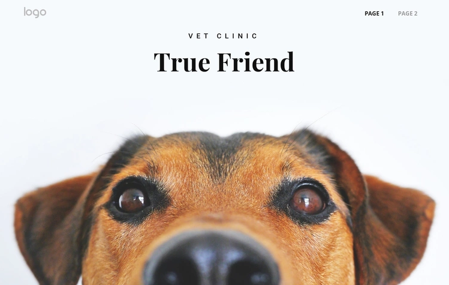
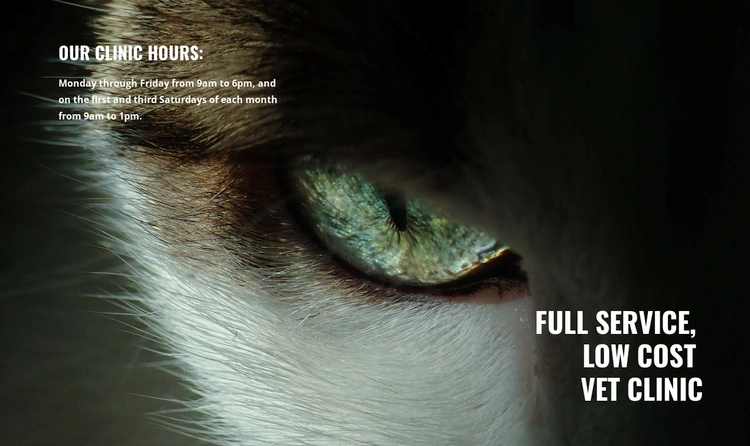
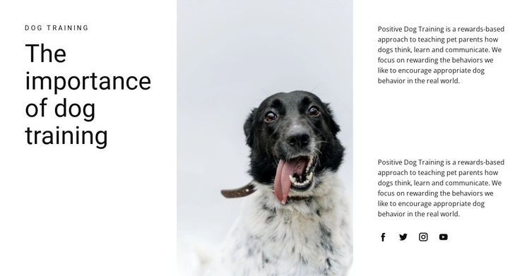
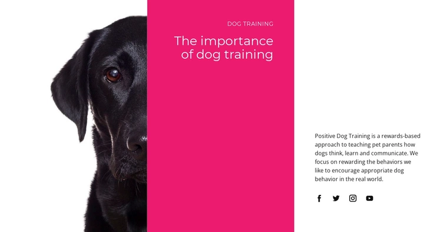
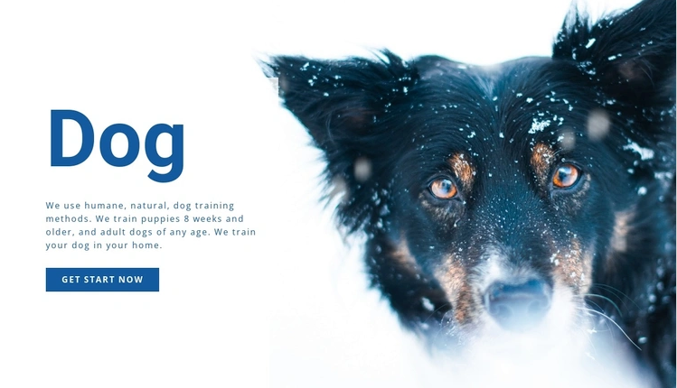

The pet super app
Everything your pet needs, beautifully connected.
Verified shops, trusted veterinarians, and a secure digital passport—one calm place for their whole life.
4.9 out of 5
Trusted by 24,000+ pet parents
One connected ecosystem
Care that follows them
everywhere.
From an urgent video call to a favorite food reorder, Pawly keeps every part of pet care close and clear.
01 / Active care
A great vet is always within reach.
Find verified, active veterinarians by specialty, availability, and location. Book a clinic visit or start a video consultation in minutes.
- ✓ Verified professional profiles
- ✓ Live availability and simple booking


02 / Trusted marketplace
Only the good stuff, from verified shops.
Discover trusted local stores, compare essentials, and order with confidence. Every seller is reviewed before they join Pawly.
800+Verified shops
30 minAvg. delivery
03 / Pet passport
Their whole health story, safe in one place.
A secure electronic identity for every pet. Keep prescriptions, allergies, vaccinations, notes, and medical history ready whenever care is needed.

PAWLY ID•••
Pet nameMilo
Border Collie · 3 years
DEA 1.1−Microchip
•••• 8104

04 / Connected platform
Everyone on the same page. Finally.
Pawly connects pet parents, clinics, and shops through one trusted third-party platform—so information moves, without the phone calls and paperwork.
- ✓ Permission-based record sharing
- ✓ One profile across every provider
05 / Everyday wellbeing
Small reminders.
A healthier life.
Stay ahead of checkups, refills, medications, and seasonal care with gentle reminders shaped around your pet.
See how Pawly works →
Better care starts here
Their world, cared for.
All in one app.
Join thousands of pet parents building happier, healthier lives with Pawly.